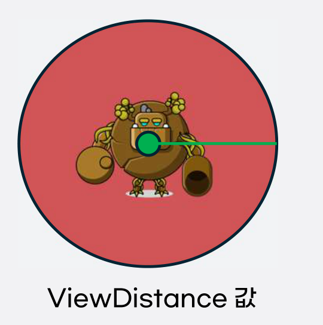

| 변수명 | 변수명(영) | 자료형 | 설명 |
|---|---|---|---|
| 시야 거리 | ViewDistance | int | 몬스터의 시야 거리 범위 안에 들어오면 추적 프로세스 시작 |

- 시야는 원형 범위이며, ViewDistance 값은 원의 반지름이다.
- 캐릭터가 시야 범위에 들어오면 몬스터의 공격 타입에 따라 전투 진입 여부를 판단한다.
| 변수명 | 변수명(영) | 자료형 | 설명 |
|---|---|---|---|
| 공격 타입 | MonsterAttackType | bool | 몬스터의 선공 여부 True: 시야·공격 사거리 안에서 먼저 공격 False: 피격 전에는 먼저 공격하지 않음 |
- True이면 캐릭터가 시야에 들어올 때 전투 프로세스를 시작한다.
- False이면 캐릭터가 시야에 들어와도 피격 전까지 기본 상태를 유지한다.